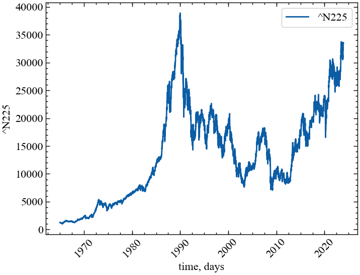
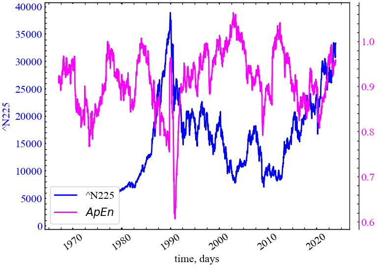
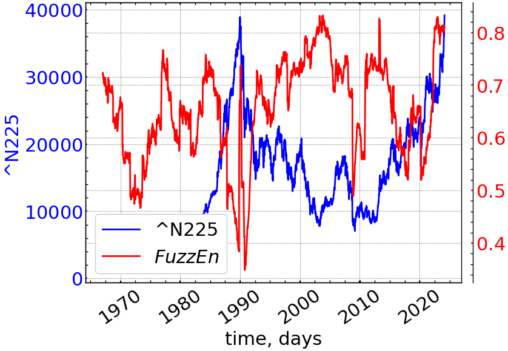
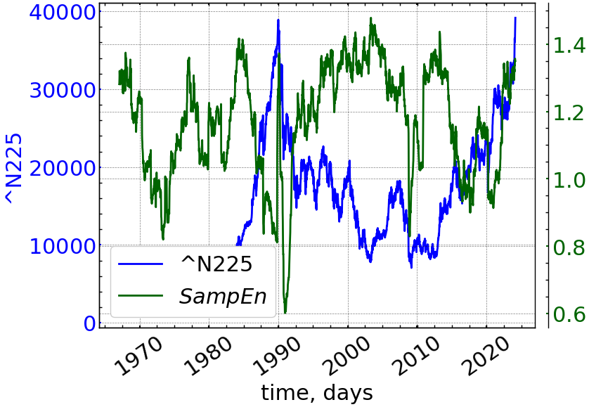
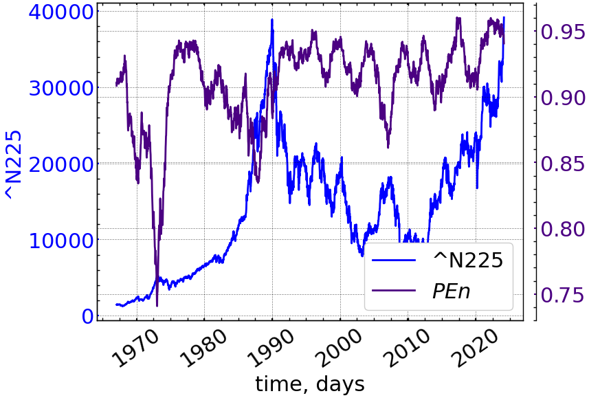
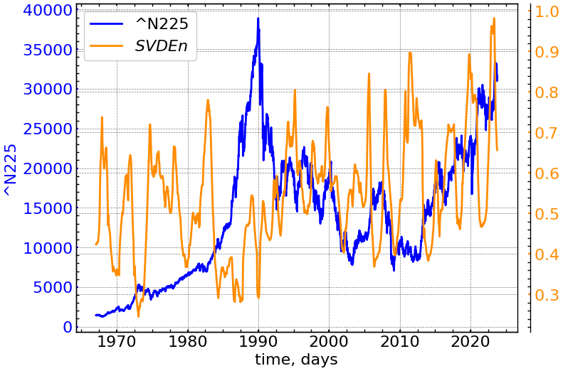
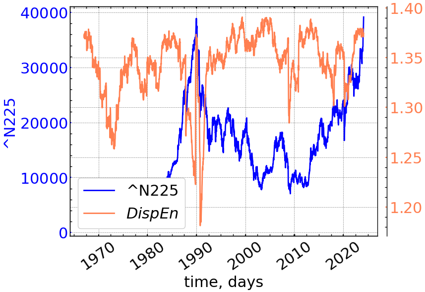
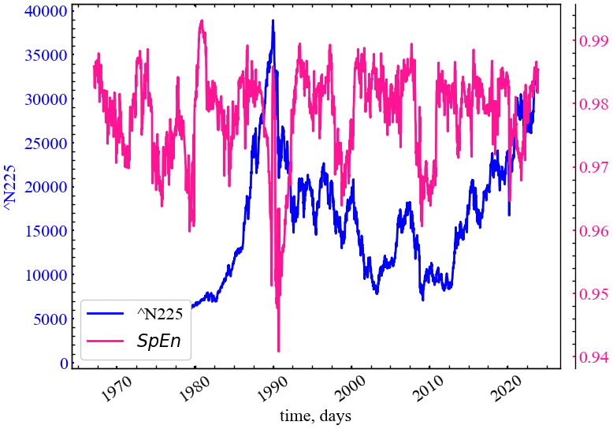

import numpy as np
import matplotlib.pyplot as plt
import pandas as pd
import yfinance as yf
import neurokit2 as nk
import EntropyHub as eh
from tqdm import tqdm
import warnings
import scienceplots
warnings.filterwarnings('ignore')5 Лабораторна робота № 5
Тема. Ентропійний аналіз складних систем.
Мета. Навчитись розраховувати значення різних типів ентропії часового ряду та досліджувати динаміку зміни її значень для оцінки якості прогнозів часових рядів.
5.1 Теоретичні відомості
Питання динаміки розвитку і функціонування складних систем може розглядатись у двох варіантах:
- як дослідження шумової активності;
- як детерміністичного випадку з певним ступенем порядку.
Останніми роками було використано кілька підходів для ідентифікації механізмів, що лежать в основі розвитку та функціонування складних систем. Особливо корисні результати було отримано при їх дослідженні методами теорії випадкових матриць, моно- та мультифрактального аналізу, теорії хаосу з реконструкцією траєкторії системи у фазовому просторі та визначення її параметрів, рекурентного аналузу. Ми розглянули ці методи у попередніх роботах. Однак, застосування деяких із методів висуває вимоги до стаціонарності досліджуваних даних, потребує довгих часових рядів та комплексного обчислення кількох параметрів.
Іншим підходом до розгляду питання вивчення особливостей складних систем є обчислення характеристик ентропії. Для практичного застосування у якості міри невизначеності, а значить і складності сигналу, використовують десятки різновидів ентропії.
Концепція термодинамічної ентропії як міри хаосу системи добре відома у фізиці, однак, останніми роками поняття ентропії було застосоване до складних систем інших об’єктів (біологічних, економічних, соціальних тощо). Так, один із найбільш часто використовуваних методів визначення ентропії базується на обчисленні спектру потужності Фур’є та застосовується для вивчення сигналів (часових рядів) різної природи. Проте, використання дискретного перетворення Фур’є для аналізу часових рядів має свої недоліки, зокрема, на результати впливає нестаціонарність рядів, варіювання їх довжини від сотень до сотень тисяч, та обмеження самого методу (незмінність частотно-часових характеристик протягом всього часу функціонування системи). Тому виникає питання про розрахунок значень ентропії за допомогою інших методів.
Введемо поняття ентропії, скориставшись інформацією, яку можна знайти у Вікіпедії.
Термодинамічна ентропія \(S\), часто просто іменована ентропія, в хімії і термодинаміці є мірою кількості енергії у фізичній системі, яка не може бути використана для виконання роботи. Вона також є мірою безладдя, присутнього в системі.
Поняття ентропії була вперше введено у 1865 році Рудольфом Клаузіусом [1]. Він визначив зміну ентропії термодинамічної системи при оборотному процесі як відношення зміни загальної кількості тепла \(\Delta Q\) до величини абсолютної температури \(T\):
\[ \Delta S = \Delta Q / T. \]
Рудольф Клаузіус дав величині \(S\) ім’я “ентропія”, що походить від грецького слова τρoπή, “зміна” (зміна, перетворення). Зверніть увагу на те, що рівність відноситься до зміни ентропії.
У 1877 році, Людвіг Больцман [2] зрозумів, що ентропія системи може відноситися до кількості можливих “мікростанів” (мікроскопічних станів) що узгоджуються з їх термодинамічними властивостями. Розглянемо, наприклад, ідеальний газ у посудині. Мікростан визначений як позиції і імпульси кожного атома, що становить систему. Зв’язність пред’являє до нас вимоги розглядати тільки ті мікростани, для яких: (i) місцерозташування всіх частин розташовані в рамках судини, (ii) для отримання загальної енергії газу кінетичні енергії атомів підсумовуються. Больцман постулював що
\[ S = k_{B}\ln{\Omega}, \]
де константу \(k_{B} = 1,38 \cdot 10^{-23} Дж/К\) ми знаємо тепер як сталу Больцмана, a \(\Omega\) є числом мікростанів, які можливі в наявному макроскопічному стані. Цей постулат, відомий як принцип Больцмана, може бути оцінений як початок статистичної механіки, яка описує термодинамічні системи використовуючи статистичну поведінку компонентів, із яких вони складаються. Принцип Больцмана зв’язує мікроскопічні властивості системи (\(\Omega\)) з однією з її термодинамічних властивостей (\(S\)).
Згідно визначенню Больцмана, ентропія є просто функцією стану. Більш того, оскільки (\(\Omega\)) може бути тільки натуральним числом (1, 2, 3), ентропія повинна бути додатною — виходячи з властивостей логарифма.
У випадку дискретних станів квантової механіки кількість станів підраховується звичайним чином. В рамках класичної механіки мікроскопічний стан системи описується координатами \(q_{i}\) й імпульсами \(p_{i}\) окремих частинок, які пробігають неперервні значення. Для підрахунку станів у класичних системах фазовий простір розбивають на невеликі комірки із об’ємом, який відповідає сталій Планка. У такому випадку
\[ S = k_{B}\ln\frac{1}{( 2\pi\hbar )^{s}} \int \prod_{i=1}^{s} dq_{i}dp_{i}, \]
де \(s\) — число незалежних координат, \(\hbar\) — приведена стала Планка, а інтегрування проводиться по області фазового простору, який відповідає певному макроскопічному стану.
Клод Шеннон [3] запропонував формулу для оцінки невизначеності кодової інформації в каналах зв’язку, звану ентропією Шеннона:
\[ S = -k\sum_{i=1}^{n}p_{i}\ln{p_{i}}, \]
де \(p_{i}\) — вірогідність того, що символ \(i\) зустрічається в коді, який містить \(N\) символів, \(k\) — розмірний множник.
Зв’язок між ентропією і інформацією можна прослідкувати на наступному прикладі. Розглянемо тіло при абсолютному нулі температури, і хай ми маємо повну інформацію про координати і імпульси кожної частинки. Для простоти покладемо, що імпульси всіх частинок рівні нулю. В цьому випадку термодинамічна ймовірність рівна одиниці, а ентропія — нулю. При кінцевих температурах ентропія в рівновазі досягає максимуму. Можна зміряти всі макропараметри, що характеризують даний макростан. Проте ми практично нічого не знаємо про мікростан системи. Точніше кажучи, ми знаємо, що даний макростан можна реалізувати за допомогою дуже великого числа мікростанів. Таким чином, нульовій ентропії відповідає повна інформація (ступінь незнання рівний нулю), а максимальної ентропії — повне незнання мікростанів (ступінь незнання максимальний).
У теорії інформації ентропія (інформаційна ентропія) визначається як кількість інформації. Нехай \(P\) — апріорна вірогідність деякої події (ймовірність до проведення досвіду), а \(P_{1}\) — ймовірність цієї події після проведення досвіду. Для простоти вважатимемо, що \(P_{1} = 1\). За Шенноном, кількість інформації \(I\), яка дає точну відповідь (після проведення експерименту)
\[ I = K \log{P}. \]
Ця кількість інформації, за визначенням, дорівнює одному біту.
Фізичний сенс \(I\) — це міра нашого незнання. Іншими словами, \(I\) — це та інформація, яку ми можемо одержати, вирішивши завдання. У прикладі (тіло при абсолютному нулі температури), що розглядається вище, міра нашого незнання рівна нулю, оскільки \(P = 1\). Після проведення досвіду ми одержуємо нульову інформацію \(I = 0\), оскільки все було відомо до досвіду. Якщо розглядати тіло при кінцевих температурах, то до проведення досвіду число мікростанів, а отже, і \(P\) дуже велике. Після проведення досвіду ми одержуємо велику інформацію, оскільки нам стають відомими координати і імпульси всіх частинок.
Аналогія між кількістю інформації і ентропією \(S\), визначуваною з принципу Больцмана, очевидна. Досить покласти множник \(K\) рівним постійній Больцмана \(k_{B}\) і використовувати натуральний логарифм. Саме з цієї причини величину \(I\) називають інформаційною ентропією. Інформаційна ентропія (кількість інформації) була визначена по аналогії із звичайною ентропією, і вона має властивості, характерні для звичайній ентропії: адитивність, екстремальні властивості і т.д. Проте ототожнювати звичайну ентропію з інформаційною не можна, оскільки неясно, яке відношення має друге начало до інформації. Нагадаємо, що екстенсивна величина — ця така характеристика системи, яка росте із збільшенням розмірів системи, тобто, якщо наша система складається з двох незалежних підсистем \(А\) і \(В\), то ентропію всієї системи можна одержати складанням ентропій підсистем:
\[ S(A+B) = S(A) + S(B). \]
Саме ця властивість і означає екстенсивність, або адитивність, ентропії.
5.2 Хід роботи
Розглянемо як ми можемо використовувати ентропійні показники в якості індикаторів або індикаторів-передвісників кризових подій. Перш за все імпортуємо необхідні модулі для подальшої роботи:
Далі виконаємо налаштування формату виведення рисунків:
plt.style.use(['science', 'notebook', 'grid']) # стиль, що використовуватиметься
# для виведення рисунків
params = {
'figure.figsize': (8, 6), # встановлюємо ширину та висоту рисунків за замовчуванням
'font.size': 22, # розмір фонтів рисунку
'lines.linewidth': 2, # товщина ліній
'axes.titlesize': 'small', # розмір титулки над рисунком
"font.family": "sans-serif", # сімейство стилів підписів
"font.serif": ["Times"], # стиль підпису
'savefig.dpi': 300 # якість збережених зображень
}
plt.rcParams.update(params) # оновлення стилю згідно налаштуваньУ даній роботі виконуватимемо розрахунки на прикладі одного з найважливіших фондових індексів Японії — Nikkei 225. Індекс обчислюється шляхом визначення простого середнього арифметичного значення цін акцій 225 провідних компаній, які входять до першої секції Токійської фондової біржі. Для отримання значень індексу скористаємось бібліотекою yfinance. Значення розглядатимемо за весь період, тому початкову та кінцеву дати вказувати не будемо.
symbol = '^N225' # Символ індексу
data = yf.download(symbol) # вивантажуємо дані
time_ser = data['Adj Close'].copy() # зберігаємо саме ціни закриття
xlabel = 'time, days' # підпис по вісі Ох
ylabel = symbol # підпис по вісі Оу
np.savetxt(f'{symbol}_initial_time_series.txt', time_ser.values)[*********************100%%**********************] 1 of 1 completed
Увага
Виконайте цей блок, якщо хочете зчитати дані не з Yahoo! Finance, а із власного файлу. Зрозуміло, що й аналіз результатів, і висновки залежать від того з яким рядом ми працюємо.
symbol = 'sMpa11' # Символ індексу
path = "databases\sMpa11.txt" # шлях по якому здійснюється зчитування файлу
data = pd.read_csv(path, # зчитування даних
names=[symbol])
time_ser = data[symbol].copy() # копіюємо значення кривої
# "напруга-видовження" до окремої змінної
xlabel = r'$\varepsilon$' # підпис по вісі Ох
ylabel = symbol # підпис по вісі ОуВиводимо досліджуваний ряд:
fig, ax = plt.subplots() # Створюємо порожній графік
ax.plot(time_ser.index, time_ser.values) # Додаємо дані до графіку
ax.legend([symbol]) # Додаємо легенду
ax.set_xlabel(xlabel) # Встановимо підпис по вісі Ох
ax.set_ylabel(ylabel) # Встановимо підпис по вісі Oy
plt.xticks(rotation=45) # оберт позначок по осі Ох на 45 градусів
plt.savefig(f'{symbol}.jpg') # Зберігаємо графік
plt.show(); # Виводимо графік
Для приведення ряду до стандартизованого вигляду або прибутковостей визначимо функцію transformations():
def transformation(signal, ret_type):
for_rec = signal.copy()
if ret_type == 1: # Зважаючи на вид ряду, виконуємо
# необхідні перетворення
pass
elif ret_type == 2:
for_rec = for_rec.diff()
elif ret_type == 3:
for_rec = for_rec.pct_change()
elif ret_type == 4:
for_rec = for_rec.pct_change()
for_rec -= for_rec.mean()
for_rec /= for_rec.std()
elif ret_type == 5:
for_rec = for_rec.pct_change()
for_rec -= for_rec.mean()
for_rec /= for_rec.std()
for_rec = for_rec.abs()
elif ret_type == 6:
for_rec -= for_rec.mean()
for_rec /= for_rec.std()
for_rec = for_rec.dropna().values
return for_recДля побудови пари часових рядів визначимо функцію plot_pair():
def plot_pair(x_values,
y1_values,
y2_values,
y1_label,
y2_label,
x_label,
file_name, clr="magenta"):
fig, ax = plt.subplots()
ax2 = ax.twinx()
ax2.spines.right.set_position(("axes", 1.03))
p1, = ax.plot(x_values,
y1_values,
"b-", label=fr"{y1_label}")
p2, = ax2.plot(x_values,
y2_values,
color=clr,
label=y2_label)
ax.set_xlabel(x_label)
ax.set_ylabel(f"{y1_label}")
ax.yaxis.label.set_color(p1.get_color())
ax2.yaxis.label.set_color(p2.get_color())
tkw = dict(size=2, width=1.5)
ax.tick_params(axis='x', **tkw)
ax.tick_params(axis='y', colors=p1.get_color(), **tkw)
ax2.tick_params(axis='y', colors=p2.get_color(), **tkw)
ax2.legend(handles=[p1, p2])
plt.savefig(file_name + ".jpg")
plt.show();5.2.1 Approximate entropy (Апроксимаційна ентропія)
Ентропія подібності (Approximate Entropy, ApEn) є “статистикою регулярності” [4,5], що визначає можливість передбачувати флуктуації в часових рядах. Інтуїтивно вона означає, що наявність повторюваних шаблонів (послідовностей певної довжини, побудованих із чисел ряду, що слідують одне за іншим) флуктуацій у часовому ряді призводить до більшої передбачуваності часового ряду порівняно із рядами, де повторюваності шаблонів немає. Порівняно велике значення ApEn показує ймовірність того, що подібні між собою шаблони спостережень не будуть слідувати один за одним. Іншими словами, часовий ряд, що містить велику кількість повторюваних шаблонів, має порівняно мале значення ApEn, а значення ApEn для менш передбачуваного (більш складного) процесу є більшим.
При розрахунку ApEn для даного часового ряду \(S_{N}\), що складається із \(N\) значень \(t(1),t(2),t(3),...,t(N)\,\) вибираються два параметри, \(m\) та \(r\). Перший з цих параметрів, \(m\), вказує довжину шаблона, а другий — \(r\) — визначає критерій подібності. Досліджуються підпослідовності елементів часового ряду \(S_{N}\), що складаються з \(m\) чисел, взятих, починаючи з номера \(i\), і називаються векторами \(p_{m} (i)\). Два вектори (шаблони), \(p_{m}(i)\) та \(p_{m}(j)\), будуть подібними, якщо всі різниці пар їх відповідних координат є меншими за значення \(r\), тобто якщо
\[ | t(i+k) - t(j+k) | < r \quad \textrm{для} \quad 0 \leq k < m. \]
Для розглядуваної множини \(P_{m}\) всіх векторів довжини \(m\) часового ряду \(S_{N}\) можна обраховуються значення
\[ C_{im}(r) = \frac{n_{im}(\,r)\,}{N-m+1}, \]
де \(n_{im}(r)\) — кількість векторів у \(P_{m}\), що подібні вектору \(p_{m}(i)\) (враховуючи вибраний критерій подібності \(r\)). Значення \(C_{im}(r)\) є часткою векторів довжини \(m\), що мають схожість із вектором такої ж довжини, елементи якого починаються з номера \(i\). Для даного часового ряду обраховуються значення \(C_{im}(r)\) для кожного вектора у \(P_{m}\), після чого знаходиться середнє значення \(C_{m}(r)\), яке виражає розповсюдженість подібних векторів довжини \(m\) у ряду \(S_{N}\). Безпосередньо ентропія подібності для часового ряду \(S_{N}\) з використанням векторів довжини \(m\) та критерію подібності \(r\) визначається за формулою:
\[ ApEn(S_{N}, m, r) = \ln\left(\,\frac{C_{m}(r)}{C_{m+1}(r)}\right), \]
тобто, як натуральний логарифм відношення повторюваності векторів довжиною \(m\) до повторюваності векторів довжиною \(m+1\).
Таким чином, якщо знайдуться подібні вектори у часовому ряді, ApEn оцінить логарифмічну ймовірність того, що наступні інтервали після кожного із векторів будуть відрізнятись. Менші значення ApEn відповідають більшій ймовірності того, що за векторами слідують подібні їм. Якщо часовий ряд дуже нерегулярний — наявність подібних векторів не може бути передбачуваною і значення ApEn є порівняно великим.
Зауважимо, що ApEn є нестійкою до вхідних даних характеристикою, оскільки досить сильно залежить від параметрів \(m\) та \(r\).
window = 500 # ширина вікна
tstep = 5 # часовий крок
m = 3 # розмірність вкладень
tau = 1 # часова затримка
r = 0.45 # параметр подібності
ret_type = 4 # вид ряду:
# 1 - вихідний,
# 2 - детрендований (різниця між теп. значенням та попереднім)
# 3 - прибутковості звичайні,
# 4 - стандартизовані прибутковості,
# 5 - абсолютні значення (волатильності)
# 6 - стандартизований ряд
length = len(time_ser.values) # довжина самого ряду
ApEn = [] # масив для зберігання значень ентропіїfor i in tqdm(range(0,length-window,tstep)): # фрагменти довжиною window
# з кроком tstep
# відбираємо фрагмент
fragm = time_ser.iloc[i:i+window].copy()
# виконуємо процедуру трансформації ряду
fragm = transformation(fragm, ret_type)
# розраховуємо апроксимаційну ентропію
Ap, _ = nk.entropy_approximate(signal=fragm,
dimension=m,
delay=tau,
tolerance=r,
corrected=False)
ApEn.append(Ap)100%|██████████| 2792/2792 [00:16<00:00, 169.59it/s]Зберігаємо значення апроксимаційної ентропії до текстового файлу:
np.savetxt(f"ApEn_name={symbol}_window={window}_step={tstep}_\
dim={m}_tau={tau}_radius={r}_sertype={ret_type}.txt", ApEn)Оголошуємо мітки для рисунків та назви збережених рисунків:
label_apen = fr'$ApEn$'
file_name_apen = f"ApEn_name={symbol}_window={window}_step={tstep}_\
dim={m}_tau={tau}_radius={r}_sertype={ret_type}"Виводимо результат:
plot_pair(time_ser.index[window:length:tstep],
time_ser.values[window:length:tstep],
ApEn,
ylabel,
label_apen,
xlabel,
file_name_apen)
5.2.2 Fuzzy entropy (Нечітка ентропія)
Однією з модифікацій ентропії Шеннона та апроксимаційної ентропії є нечітка (апроксимаційна) ентропія (FuzzEn) [6,7]. Цей підхід виключає самоподібність між досліджуваними векторами, і замість функції Гевісайда, яка видає або 0, або 1 для схожих векторів, використовується нечітка функція належності, яка у випадку FuzzEn буде асоціювати схожість між двома векторами з реальним значенням в діапазоні \([0, 1]\). Різницю можна побачити на етапі побудови вектора вкладень, де для реконструйованих векторів ми виконуємо детрендування:
\[ \vec{X}(i) = \left\{ x(i), x(i+1),..., x(i+d_E - 1) - x_{0}(i) \right\}, \,\, i=1,...,N-d_{E}+1, \]
де \(x_{0}(i)=\frac{1}{d_{E}}\sum_{j=0}^{d_{E}-1}x(i+j)\). Далі, для послідовних вбудованих векторів знаходиться відстань
\[ d\left[ \vec{X}(i), \vec{X}(j) \right] = \max{\left| \vec{X}(i) - \vec{X}(j) \right|}, i\geq 1, \, j \leq N - d_E + 1. \]
У класичній ApEn значення відстаней пропускаються через функцію Гевісайда. Нечітка модифікація використовує функції належності для вимірювання належності однієї траєкторії до іншої:
\[ D_{i, j} = \mu\left( d\left[\vec{X}(i), \vec{X}(j) \right]\right), \]
де \(\mu = \exp\left( -\frac{x^{r_2}}{r_1} \right)\), а \(r_1\) та \(r_2\) ширина та градієнт експоненціальної функції.
Далі, обчислюється наступна функція, що подібна до кореляційного інтегралу в класичній ApEn:
\[ \phi^{d_E} = \frac{1}{(N-d_{E}+1)}\sum_{i=1}^{N-d_{E}+1}\left( \frac{1}{N-d_{E}}\sum_{j=1, j \neq i}^{N-d_{E}} D_{i, j} \right). \]
Нарешті,
\[ FuzzEn(\vec{X}, d_{E}) = -\left[ \ln{\phi^{d_{E}+1} - \ln{\phi^{d_{E}}}} \right]. \]
window = 500 # ширина вікна
tstep = 5 # часовий крок
m = 3 # розмірність вкладень
tau = 1 # часова затримка
characteristic_func = "default" # вид функції приналежності:
# default,
# sigmoid,
# gudermannian,
# linear
r = (0.4, 2.0) # параметри, що подаються до функції приналежності:
# для 'default' та 'sigmoid' - два значення r,
# для gudermannian та linear - 1 значення r,
ret_type = 4 # вид ряду:
# 1 - вихідний
# 2 - детрендований (різниця між теп. значенням та попереднім)
# 3 - прибутковості звичайні
# 4 - стандартизовані прибутковості
# 5 - абсолютні значення (волатильності)
# 6 - стандартизований ряд
length = len(time_ser.values) # довжина самого ряду
FuzzEn = [] #масив для зберігання значень ентропіїfor i in tqdm(range(0,length-window,tstep)): # фрагменти довжиною window
# з кроком tstep
# відбираємо фрагмент
fragm = time_ser.iloc[i:i+window].copy()
# виконуємо процедуру трансформації ряду
fragm = transformation(fragm, ret_type)
# обчислення нечіткої ентропії
Fuzz, _, _ = eh.FuzzEn(Sig=fragm, m=m, tau=tau, Fx=characteristic_func, r=r)
FuzzEn.append(Fuzz[-1]) # дожаємо розрахованє значення до масиву значень 100%|██████████| 2792/2792 [02:51<00:00, 16.31it/s]Зберігаємо значення нечіткої ентропії до текстового файлу:
np.savetxt(f"FuzzEn_name={symbol}_window={window}_step={tstep}_\
dim={m}_tau={tau}_radius={r}_sertype={ret_type}_\
memberfunc={characteristic_func}.txt", FuzzEn)Оголошуємо мітки для рисунків та назви збережених рисунків:
label_fuzzen = fr'$FuzzEn$'
file_name_fuzzen = f"FuzzEn_name={symbol}_window={window}_step={tstep}_\
dim={m}_tau={tau}_radius={r}_sertype={ret_type}_\
memberfunc={characteristic_func}"Виводимо результат:
plot_pair(time_ser.index[window:length:tstep],
time_ser.values[window:length:tstep],
FuzzEn,
ylabel,
label_fuzzen,
xlabel,
file_name_fuzzen,
clr='red')
5.2.3 Sample entropy (Ентропія шаблонів)
При розрахунку ApEn, як було показано вище, враховуються подібності певного вектора \(p_n(i)\) до самого себе, що використовується для звільнення від можливого значення \(\ln{0}\), яке може виникнути при відсутності подібних до даного векторів. Однак, вказана особливість призводить до нівелювання двох важливих характеристик у ентропії подібності:
- ApEn сильно залежить від довжини розглядуваного шаблона (вектора) і є нижчою, ніж очікується, для векторів малої розмірності;
- ApEn не враховує відносну щільність даних.
Це означає, що коли значення ApEn для одного ряду є більшим, ніж для іншого, то воно повинно залишатись таким (проте не є) для будь-яких можливих початкових умов. Такий висновок тим більш важливий, оскільки ApEn рекомендується в якості міри порівняння двох наборів даних різними авторами.
Враховуючи вказані обмеження, розроблена для розрахунку інша характеристика, — ентропія шаблонів (Sample Entropy, SampEn) [8].
При розрахунку SampEn, на відміну від алгоритму ApEn, додаються дві умови:
- не враховується подібність вектора самому собі;
- при розрахунку значень умовних ймовірностей SampEn не використовується довжина векторів.
На основі аналізу вищезазначеного можна зробити висновок про те, що SampEn:
- більше, ніж ApEn, відповідає теорії випадкових чисел для ряду із відомою функцією щільності розподілу;
- зберігає відносну щільність, в той час як ApEn втрачає дану характеристику;
- додає значно меншу помилку до розрахованого значення у випадку використання векторів малої розмірності.
window = 500 # ширина вікна
tstep = 5 # часовий крок
m = 3 # розмірність вкладень
tau = 1 # часова затримка
r = 0.4 # параметр подібності
ret_type = 4 # вид ряду:
# 1 - вихідний
# 2 - детрендований (різниця між теп. значенням та попереднім)
# 3 - прибутковості звичайні
# 4 - стандартизовані прибутковості
# 5 - абсолютні значення (волатильності)
# 6 - стандартизований ряд
length = len(time_ser.values) # довжина самого ряду
SampEn = [] # масив для зберігання значень ентропії шаблонівfor i in tqdm(range(0,length-window,tstep)): # фрагменти довжиною window
# з кроком tstep
# відбираємо фрагмент
fragm = time_ser.iloc[i:i+window].copy()
# виконуємо процедуру трансформації ряду
fragm = transformation(fragm, ret_type)
# обчислення ентропії шаблонів
Samp, _ = nk.entropy_sample(signal=fragm,
dimension=m,
delay=tau,
tolerance=r)
SampEn.append(Samp)100%|██████████| 2792/2792 [00:15<00:00, 184.11it/s]Зберігаємо значення ентропії шаблонів до текстового файлу:
np.savetxt(f"SampEn_name={symbol}_window={window}_step={tstep}_\
dim={m}_tau={tau}_radius={r}_sertype={ret_type}.txt", SampEn)Оголошуємо мітки для рисунків та назви збережених рисунків:
label_sampen = fr'$SampEn$'
file_name_sampen = f"SampEn_name={symbol}_window={window}_step={tstep}_\
dim={m}_tau={tau}_radius={r}_sertype={ret_type}"Виводимо результат:
plot_pair(time_ser.index[window:length:tstep],
time_ser.values[window:length:tstep],
SampEn,
ylabel,
label_sampen,
xlabel,
file_name_sampen,
clr='darkgreen')
5.2.4 Permutation entropy (Ентропія перестановок)
Ентропія перестановок (PEn) — це міра з теорії хаосу, запропонована Бандтом і Помпе [9], яка характеризується концептуальною простотою і швидкістю обчислень. Ідея PEn базується на звичайній ентропії Шеннона, але використовує патерни перестановок — порядкові відношення між значеннями системи. Порівняно з іншими мірами складності, цей підхід має багато переваг, таких як стійкість до шуму та інваріантність до нелінійних монотонних перетворень [10]. PEn можна описати наступним чином.
Як і в попередніх типах ентропії, ми реконструюємо часовий ряд із \(N\) значень з фіксованою розмірністю вбудовування \(d_E\) та часовою затримкою \(\tau\), за вкладеною матрицею формуємо часові векторні послідовності
\[ \vec{X}(i) = \left\{ x(i), x(i+1),..., x(i+[d_E - 1]\tau) \right\}, \]
де в результаті отримується \(N - [d_E - 1]\tau\) векторів.
Потім кожен елемент \(\vec{X}(i)\) перетворюється в числові ранги відповідно до їх порядку. Наприклад, для \(d_E = 2\) і \(\tau = 1\) та часового ряду \(\vec{X}(i) = (-0.1, 0.4, 3.2, 12.0, 6.5)\), вбудована матриця матиме такі пари: \(\vec{X}(1) = {-0.1, 0.4}\), \(\vec{X}(2) = {0.4, 3.2}\), \(\vec{X}(3) = {3.2, 12.0}\), \(\vec{X}(4) = {12.0, 6.5}\).
Далі ми формуємо порядкові послідовності відповідно до їх числового порядку. Такі вектори як \(\vec{X}(1), \vec{X}(2), \vec{X}(3)\) задовольняють умові \(x(i) < x(i+1)\) і один вектор \(\vec{X}(4)\) задовольняє умові \(x(i) > x(i+1)\). Згідно з PEn, можна розглянути \(d_E!\) можливих перестановок порядку \(d_E\). У нашому прикладі розглядаються лише \(2!\) шаблони: \(\pi_1 = {0, 1}, \pi_2 = {1, 0}\).
Для кожного шаблону ми визначаємо його відносну частоту:
\[ p(\pi) = \frac{\#\left\{\vec{X}(i) \,\, \text{має шаблон} \,\, \pi \right\}}{N - [d_E - 1]\tau}. \]
Імовірність знаходження вектора по шаблону \(\pi_1\) дорівнює \(3/4\) і по шаблону \(\pi_2\) дорівнює \(1/4\), тобто ми формуємо розподіл імовірностей \(P = \left\{ p(\pi_{1}),...,p(\pi_{d_E}) \right\}\). Нарешті, даний вид ентропії може бути розрахований у той самий спосіб, що й ентрпія Шеннона:
\[ PEn(\vec{X}, d_E) = -\sum_{i=1}^{d_E}p(\pi_i)\ln{p(\pi_i)}. \]
Для зручності, PEn нормалізується згідно наступного рівняння:
\[ \overline{PEn(\vec{X}, d_E)} = \frac{PEn(\vec{X}, d_E)}{PEn_{max}}, \]
де \(PEn_{max} = \ln{D!}\), а нормалізована ентропія перестановок знаходиться в діапазоні \(0 \leq \overline{PEn(\vec{X}, d_E)} \leq 1\).
window = 500 # ширина вікна
tstep = 5 # часовий крок
m = 4 # розмірність вкладень
tau = 3 # часова затримка
Type = 'none' # none - класична
# finegrain - Дрібнозерниста ентропія перестановок
# modified - Модифікована ентропія перестановок
# weighted - Зважена ентропія перестановок
# ampaware - Амплітудно-орієнтована ентропія перестановок
# edge - Ентропія перестановки граней
# uniquant - Рівномірна ентропія перестановок на основі квантування
tpx = -1 # finegrain tpx - параметр α, додатний скаляр (за замовчуванням: 1)
# ampaware tpx - параметр A, значення в діапазоні [0, 1] (за замовчуванням: 0.5)
# edge tpx - параметр чутливості r, скаляр > 0 (за замовчуванням: 1)
# uniquant tpx - параметр L, ціле число > 1 (за замовчуванням: 4)
log = np.exp(1) # основа логарифма
norm = True # нормування ентропії
ret_type = 1 # вид ряду:
# 1 - вихідний
# 2 - детрендований (різниця між теп. значенням та попереднім)
# 3 - прибутковості звичайні
# 4 - стандартизовані прибутковості
# 5 - абсолютні значення (волатильності)
# 6 - стандартизований ряд
length = len(time_ser.values) # довжина самого ряду
PEn = [] # масив для зберігання значень нормалізованої перм. ентропіїfor i in tqdm(range(0,length-window,tstep)): # фрагменти довжиною window
# з кроком tstep
# відбираємо фрагмент
fragm = time_ser.iloc[i:i+window].copy()
# виконуємо процедуру трансформації ряду
fragm = transformation(fragm, ret_type)
# обчислюємо ентропію перестановок
_, Pnorm, cPE = eh.PermEn(fragm,
m=m,
tau=tau,
Typex=Type,
tpx=tpx,
Logx=log,
Norm=norm)
PEn.append(Pnorm[-1])100%|██████████| 2792/2792 [02:02<00:00, 22.84it/s]Зберігаємо значення пермутаційної ентропії до текстового файлу:
np.savetxt(f"PEn_name={symbol}_window={window}_step={tstep}_\
dim={m}_tau={tau}_sertype={ret_type}_type={Type}_param={tpx}.txt", PEn)Оголошуємо мітки для рисунків та назви збережених рисунків:
label_permen = fr'$PEn$'
file_name_perm = f"PEn_name={symbol}_window={window}_step={tstep}_\
dim={m}_tau={tau}_sertype={ret_type}_type={Type}_param={tpx}"Виводимо результат для ентропії перестановок:
plot_pair(time_ser.index[window:length:tstep],
time_ser.values[window:length:tstep],
PEn,
ylabel,
label_permen,
xlabel,
file_name_perm,
clr='indigo')
5.2.5 Singular value decomposition entropy (ентропія сингулярного розкладу)
Ентропію сингулярного розкладу (SVDEn) [11] можна інтуїтивно розглядати як показник того, скільки власних векторів потрібно для адекватного пояснення набору даних. Іншими словами, вона вимірює багатство ознак: чим вища SVDEn, тим більше ортогональних векторів потрібно для адекватного пояснення стану простору. Подібно до інформаційого показника Фішера, вона базується на розкладанні сингулярного значення реконструйованого методом часових затримок сигналу.
window = 500 # ширина вікна
tstep = 5 # часовий крок
m = 3 # розмірність вкладень
tau = 1 # часова затримка
ret_type = 6 # вид ряду:
# 1 - вихідний
# 2 - детрендований (різниця між теп. значенням та попереднім)
# 3 - прибутковості звичайні
# 4 - стандартизовані прибутковості
# 5 - абсолютні значення (волатильності)
# 6 - стандартизований ряд
length = len(time_ser.values) # довжина самого ряду
SVDEn = [] # масив для зберігання значень розподільної ентропії for i in tqdm(range(0,length-window,tstep)): # фрагменти довжиною window
# з кроком tstep
# відбираємо фрагмент
fragm = time_ser.iloc[i:i+window].copy()
# виконуємо процедуру трансформації ряду
fragm = transformation(fragm, ret_type)
# обчислення розподільної ентропії
svden, _ = nk.entropy_svd(signal=fragm,
dimension=m,
delay=tau)
SVDEn.append(svden)100%|██████████| 2792/2792 [00:01<00:00, 1787.05it/s]Зберігаємо значення розподільної ентропії до текстового файлу:
np.savetxt(f"SVDEn_name={symbol}_window={window}_step={tstep}_\
dim={m}_tau={tau}_sertype={ret_type}.txt", SVDEn)Оголошуємо мітки для рисунків та назви збережених рисунків:
label_svden = fr'$SVDEn$'
file_name_svden = f"SVDEn_name={symbol}_window={window}_step={tstep}_\
dim={m}_tau={tau}_sertype={ret_type}"Виводимо результат:
plot_pair(time_ser.index[window:length:tstep],
time_ser.values[window:length:tstep],
SVDEn,
ylabel,
label_svden,
xlabel,
file_name_svden,
clr='darkorange')
5.2.6 Dispersion entropy (Дисперсійна ентропія)
Для заданого одновимірного сигналу довжини \(N\): \(x=\{x_1, x_2,...,x_N\}\), алгоритм дисперсійної ентропії (DispEn) включає 4 основних кроки [12]:
Спочатку \(x_j \, (j=1,2,...N)\) відображаються на \(c\) класів, позначених від \(1\) до \(c\). Для цього існує ряд лінійних та нелінійних підходів. Хоча лінійний алгоритм відображення є найшвидшим, коли максимальні та/або мінімальні значення часового ряду набагато більші або менші за середнє/медіанне значення сигналу, більшість значень \(x_i\) віднесено лише до кількох класів. Таким чином, ми спочатку використовуємо нормальну кумулятивну функцію розподілу (NCDF) для відображення \(x\) в \(y=\{y_1,y_2,...,y_N\}\) від \(0\) до \(1\). Далі ми використовуємо лінійний алгоритм для присвоєння кожному \(y_j\) цілого числа від \(1\) до \(c\). Для цього для кожного члена відображеного сигналу ми використовуємо \(z_{j}^{c} = \text{round}(y_{j} + 0.5)\), де \(z_{j}^{c}\) показує \(j\)-й член класифікованого часового ряду, а округлення передбачає або збільшення, або зменшення числа до наступної цифри. Варто зазначити, що цей крок можна виконати за допомогою інших лінійних та нелінійних методів відображення.
Кожен вектор \(\mathbf{z}_{i}^{d_E, c}\) з розмірністю \(d_E\) та часовою затримкою \(\tau\) має вид \(\mathbf{z}_{i}^{d_E, c} = \{ z_{i}^{c}, z_{i+\tau}^{c},...,z_{i+(d_E-1)\tau}^{c} \}\), \(i=1,...,N-(d_E-1)\tau\). Кожен вектор \(\mathbf{z}_{i}^{d_E, c}\) проектується на дисперсійний шаблон \(\pi_{v_0, v_1,...,v_{d_E-1}}\), де \(z_{i}^{c}=v_{0}, z_{i+\tau}^{c}=v_{1},...,z_{i+(d_{E}-1)\tau}^{c}=v_{d_{E}-1}\). Кількість можливих дисперсійних шаблонів, що може бути присвоєна кожному вектору \(\mathbf{z}_{i}^{d_E, c}\) дорівнює \(c^{m}\), оскільки сигнал має \(d_E\) елементів і кожному елементу може бути присвоєно ціле значення від \(1\) до \(c\).
Для всіх потенційних \(c^{m}\) дисперсійних шаблонів розраховується відносна частота:
\[ p(\pi_{v_0, v_1,...,v_{d_{E}-1}}) = \frac{\#\left\{i | i \leq N-(d_E-1)\tau, \mathbf{z}_{i}^{d_E, c} \,\, \text{має шаблон} \,\, \pi_{v_0, v_1,...,v_{d_{E}-1}} \right\} }{N-(d_{E}-1)\tau}. \]
Нарешті, опираючись на формулу ентропії Шеннона, DispEn розраховується як
\[ DispEn(\mathbf{x}, d_E, c, \tau) = -\sum_{\pi = 1}^{c^{d_E}}p(\pi_{v_0, v_1,...,v_{d_{E}-1}})\ln{(\pi_{v_0, v_1,...,v_{d_{E}-1}})}. \]
Коли всі можливі дисперсійні шаблони мають однакову ймовірність, отримуємо найбільше значення DispEn, яке має величину \(\ln{c^{d_E}}\) І навпаки, якщо тільки одне \(p(\pi_{v_0, v_1,...,v_{d_{E}-1}})\) відрізняється від нуля, що свідчить про абсолютно регулярний/передбачуваний сигнал, отримуємо найменше значення DispEn.
window = 500 # ширина вікна
tstep = 5 # часовий крок
fluct = False # флуктуаційно-дисперсійна ентропія
m = 3 # розмірність вкладень
tau = 1 # часова затримка
rho = 1 # параметр для Type="finesort", позитивний скаляр (за замовчуванням 1)
classes = 6 # кількість символів, що задіяні при перетворені
type = 'ncdf' # тип символьного перетворення ряду:
# "ncdf" - Нормалізована кумулятивна функція розподілу
# "kmeans" - Алгоритм кластеризації K-середніх
# "linear" - Лінійна сегментація діапазону сигналу
# "finesort" - Ентропія дрібнодисперсного розсіювання
ret_type = 4 # вид ряду:
# 1 - вихідний
# 2 - детрендований (різниця між теп. значенням та попереднім)
# 3 - прибутковості звичайні
# 4 - стандартизовані прибутковості
# 5 - абсолютні значення (волатильності)
# 6 - стандартизований ряд
length = len(time_ser.values) # довжина самого ряду
DispEn = [] # масив значень для зберігання дисперсійної ентропії for i in tqdm(range(0,length-window,tstep)): # фрагменти довжиною window
# з кроком tstep
# відбираємо фрагмент
fragm = time_ser.iloc[i:i+window].copy()
# виконуємо процедуру трансформації ряду
fragm = transformation(fragm, ret_type)
# обчислюємо дисперсійну ентропію
Disp, _ = nk.entropy_dispersion(signal=fragm,
dimension=m,
delay=tau,
c=classes,
symbolize=type,
fluctuation=fluct,
rho=rho)
DispEn.append(Disp)100%|██████████| 2792/2792 [00:03<00:00, 722.59it/s]Зберігаємо значення дисперсійної ентропії до текстового файлу:
np.savetxt(f"DispEn_symbol={symbol}_window={window}_step={tstep}_d_e={m}_tau={tau}_\
series_type={ret_type}_fluct={fluct}_rho={rho}_\
classes={classes}_type={Type}.txt", DispEn)Оголошуємо мітки для рисунків та назви збережених рисунків:
label_dispen = fr'$DispEn$'
file_name_dispen = f"DispEn_symbol={symbol}_window={window}_step={tstep}_d_e={m}_tau={tau}_\
series_type={ret_type}_fluct={fluct}_rho={rho}_\
classes={classes}_type={Type}"Виводимо результат:
plot_pair(time_ser.index[window:length:tstep],
time_ser.values[window:length:tstep],
DispEn,
ylabel,
label_dispen,
xlabel,
file_name_dispen,
clr='coral')
5.2.7 Spectral Entropy (Спектральна ентропія)
Спектральна ентропія (SE або SpEn) [13] розглядає нормовану щільність спектра потужності (PSD) сигналу в частотній області як розподіл ймовірностей і обчислює його ентропію Шеннона:
\[ SpEn = -\sum P(f)\log_{2}[P(f)]. \]
Сигнал з однією частотною складовою (наприклад, чиста синусоїда) має найменшу ентропію. З іншого боку, сигнал з усіма частотними компонентами однакової потужності (білий шум) дає найбільшу ентропію.
window = 500 # ширина вікна
tstep = 5 # часовий крок
num_bins = 30 # якщо передано ціле число, розділить PSD
# на декілька частотних діапазонів
method = 'fft' # метод для розрахунку щільності спектра потужності:
# welch
# fft
# multitapers
# lombscargle
# burg
ret_type = 4 # вид ряду:
# 1 - вихідний
# 2 - детрендований (різниця між теп. значенням та попереднім)
# 3 - прибутковості звичайні
# 4 - стандартизовані прибутковості
# 5 - абсолютні значення (волатильності)
# 6 - стандартизований ряд
length = len(time_ser.values) # довжина самого ряду
SpEn = [] # масив значень для зберігання спектральної ентропії for i in tqdm(range(0,length-window,tstep)): # фрагменти довжиною window
# з кроком tstep
# відбираємо фрагмент
fragm = time_ser.iloc[i:i+window].copy()
# виконуємо процедуру трансформації ряду
fragm = transformation(fragm, ret_type)
# обчислюємо спектральну ентропію
spec, _ = nk.entropy_spectral(signal=fragm,
bins=num_bins,
method=method)
SpEn.append(spec)100%|██████████| 2792/2792 [00:17<00:00, 156.13it/s]Зберігаємо значення спектральної ентропії до текстового файлу:
np.savetxt(f"SpEn_symbol={symbol}_window={window}_step={tstep}_\
series_type={ret_type}_bins={num_bins}_psd={method}.txt", SpEn)Оголошуємо мітки для рисунків та назви збережених рисунків:
label_spen = fr'$SpEn$'
file_name_spen = f"SpEn_symbol={symbol}_window={window}_step={tstep}_\
series_type={ret_type}_bins={num_bins}_psd={method}"Виводимо результат:
plot_pair(time_ser.index[window:length:tstep],
time_ser.values[window:length:tstep],
SpEn,
ylabel,
label_spen,
xlabel,
file_name_spen,
clr='deeppink')